Arquitetura de Referência - Escrituração Nativa CAIXA
Definições
- Sistemas Operacionais: São os sistemas da CAIXA ou de terceiros, responsáveis pelo tratamento das operações, apuração e demonstração dos saldos operacionais e pela geração das informações ao SINAF, conforme padrão de leiaute definido.
- Fato operacional: Deriva do conceito de fato administrativo, ou seja, aquele que provoca modificação no Patrimônio da entidade, sendo, por isso, objeto de contabilização por meio da conta patrimonial ou de resultado, quando apresentar reflexo econômico ou financeiro.
- Evento contábil: Codificação numérica que representa o fato operacional informado pelos Gestores para registro contábil. Associa-se ao roteiro do evento contábil a subconta a débito e a crédito a serem sensibilizadas no SINAF.
- SINAF: Sistema de Entrada de Dados da Área Financeira: Sistema de entrada única de dados para Contabilidade CAIXA gerando insumos para os sistemas de Custo, Financeiro, de Orçamento, de Tributos e da Contabilidade de Fundos e Programas, bem como os lançamentos contábeis pela recepção da interface dos diversos sistemas corporativos e por meio dos registros manuais.
- SINAFWEB: Canal oficial da CAIXA para entrada de dados de lançamentos de rotina não automatizada, correção de sistema e rotina de BackOffice.
- SIMCN: Captura o movimento do SINAF, forma um banco de dados do sistema e faz conciliação automática com base nos parâmetros definidos para cada subconta/produto. Os registros conciliados são eliminados da base e ficam aptos para conciliação manual no âmbito de subconta/produto/unidade. Esse sistema também faz apuração de diferença operacional x contábil para subcontas/produto previamente parametrizadas.
- SICTB: Sistema de Contabilidade da CAIXA – Responsável pela escrituração contábil, apuração de saldos e livros contábeis oficiais para entidade CAIXA.
- Subcontas Contábeis: Subcontas criadas no SINAF, a partir do desdobramento das Contas dispostas no COSIF, para serem utilizadas internamente pela CAIXA, também conhecidas como títulos contábeis .
- Conta de Balanceamento: É uma conta transitória. Seu saldo deve ser zerado ao final do processo de escrituração e conciliação.
- OL – Origem do Lançamento: É um código numérico de sete algarismos que indica o sistema responsável pela geração do lançamento contábil, onde os quatro primeiros dizem respeito ao código do sistema e os três últimos se referem a alguma particularidade com relação à forma de entrada dos dados na Contabilidade.
Contextualização
Este documento contempla a definição da arquitetura de referência que tem por objetivos minimizar a ocorrência de pendências operacionais refletidas na contabilidade, bem como otimizar a rastreabilidade e tratamento destas ocorrências pelas áreas da CAIXA relacionadas ao tema.
A arquitetura proposta contempla padronizações e melhores práticas a serem implementadas tanto em projetos de novos sistemas operacionais (em desenvolvimento ou adquiridos no mercado) quanto na adequação dos sistemas operacionais legados da CAIXA.
Processo Atual de Escrituração Contábil
O processo de escrituração contábil é responsável pelo registro cronológico de todos os eventos contábeis vinculados aos fatos operacionais gerados pelos quase 100 sistemas que gerenciam produtos e serviços na CAIXA, e que geram impactos na contabilidade da empresa.
Atualmente, cada sistema operacional implementa de forma independente toda a lógica de geração deste fato, sua vinculação a um evento contábil específico e o envio destes registros em arquivos codificados sob um layout universal - DS200 - para o sistema que irá consolidar tais informações: o SINAF. O leiaute DS200 pode ser verificado no ANEXO IV.
O SINAF implementa, entre outras funcionalidades, o cadastro, a manutenção e armazenamento do plano de contas da CAIXA e de todos os eventos e roteiros contábeis vinculados aos fatos operacionais ativos nos sistemas operacionais empresa.
Com base nas informações sob seu domínio e o uso de lógicas de validação adicionais, tais arquivos são processados pelo SINAF para a identificação de incoerências nos registros recepcionados. Exemplos: fatos operacionais sem evento correspondente, eventos com data de validade vencida, ausência de campos críticos entre outros.
Uma vez validados, tais registros são consolidados com base no plano de contas cadastrado, e disponibilizados para o SIMCN e o SICTB.
O SIMCN é o sistema responsável pela conciliação das subcontas contábeis e o SICTB pela escrituração destes lançamentos e pela geração dos balancetes, CADOC e documentos contábeis requeridos pelos órgãos reguladores e de outras áreas da CAIXA.
Conforme já mencionado, a implementação das rotinas de geração e envio dos eventos contábeis pelos sistemas operacionais é feita de forma totalmente independente, não seguindo nenhum padrão e nenhum sincronismo com os dados correlatos cadastrados e mantidos no SINAF, conforme representado no diagrama abaixo:
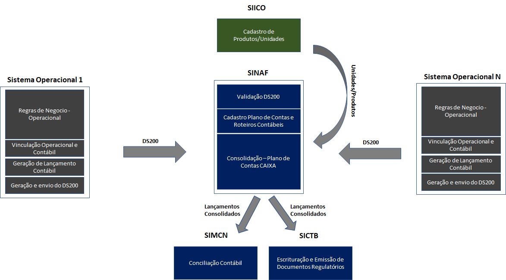
Tal cenário tem contribuído para a ocorrência de um considerável número de pendencias contábeis na CAIXA e também para o aumento da complexidade da rastreabilidade e tratamento destas pendências.
Seguem abaixo aspectos da solução atual que têm contribuído para ocorrência destes problemas:
-
A ausência de um padrão de captura, vinculação e envio de eventos nos sistemas operacionais acaba permitindo que sejam enviados para o SINAF eventos sem a sua conciliação na origem. Ela é necessária quando existe um fato operacional vinculado ao lançamento de um segundo fato operacional em um outro sistema dentro de um fluxo de negócio considerado. A ausência desta conciliação acaba gerando pendências contábeis, detectadas somente durante as fases de conciliação contábil;
-
Alto grau de independência entre os fatos operacionais e os respectivos eventos contábeis. Há sistemas operacionais que geram durante seus processamentos fatos operacionais sem vínculo com nenhum evento contábil, o que inviabiliza completamente a sua contabilização;
-
Ausência da garantia de armazenamento dos fatos operacionais no nível analítico para eventuais tratamentos de pendencias contábeis, uma vez que cada sistema operacional possui a sua política própria de retenção de dados que muitas vezes não é compatível com as necessidades regulatórias dos processos contábeis.
Solução Proposta e Benefícios Esperados
Em linhas gerais a arquitetura de referência proposta se fundamenta na garantia da originação consistente do evento contábil a partir do fato operacional e o seu armazenamento pelo período necessário ao atendimento das regulações vigentes.
Para isso, o que se propõe é a implementação de um módulo de escrituração nativa a ser integrado em cada sistema operacional, com objetivo de incorporação e padronização das seguintes responsabilidades:
-
Sincronização de dados com o SINAF e SIICO: Para garantir a consistência dos lançamentos contábeis gerados e enviados ao SINAF, bem como dos razonetes e relatórios disponibilizados pelo módulo de escrituração, faz-se necessário o uso de dados atualizados de unidades/produtos armazenados no SIICO e do plano de contas da CAIXA armazenado no SINAF. Para viabilizar um desempenho aceitável dos processamentos mencionados, o módulo de escrituração deverá manter replicações destes dados em sua base e garantir sincronismo com as bases de origem por meio de cargas diárias a serem realizadas antes do início de cada movimento, ou seja, antes do sistema iniciar o processamento das transações, deverá atualizar suas tabelas com os dados do arquivo disponibilizado pelo SINAF, ao final do dia. Os dados do SIICO e do SINAF serão replicados por meio de arquivos por conta do seu alto volume. Além da sincronização de dados com o SINAF por meio da carga diária, o SINAF deve dispor de API REST para fins de consulta dos dados para parametrização operacional/contábil.
-
Parametrização operacional/contábil integrada: Disponibilizar telas de parametrização operacional e contábil padronizada e, conforme já mencionado, integrada com o SINAF e com o SIICO para obtenção de informações relevantes a estes processos (roteiro contábil e unidades/produtos ativos respectivamente).
-
Vinculação de fatos operacionais e análise de erros/inconsistências: Realizar o vínculo do fato recebido pelo sistema operacional ao seu respectivo evento contábil e realizar a crítica do registro em busca de erros e inconsistências antes do repasse ao SINAF. A relação das inconsistências verificadas pode ser visualizada no ANEXO I.
-
Balanceamento de subcontas: Processo pelo qual é feita, de forma automática e em situações especiais, a substituição de subcontas específicas informadas em um lançamento ou a geração de lançamentos complementares com o objetivo de tornar o processo de escrituração mais otimizado. Os critérios para a aplicação do balanceamento e suas respectivas regras estão no ANEXO II.
-
Armazenamento rastreável de lançamentos contábeis: Viabilizar o armazenamento de todos os lançamentos vinculados e não vinculados contabilmente e os enviados ao SINAF, em uma granularidade analítica com políticas de retenção próprias e independentes dos sistemas operacionais, para fins de auditoria e rastreabilidade. Os prazos de retenção para estes dados são de no mínimo 5 anos para bases ativas de consultas recorrentes e de no máximo o estabelecido pelo negócio, para consultas eventuais. Cabe aqui salientar que o modelo de dados a ser utilizado no módulo de escrituração deve prever a obrigatoriedade dos seguintes relacionamentos abaixo descritos, como forma de garantir a rastreabilidade de consolidações e composições realizadas:
- Sumarização de Eventos Contábeis: Os lançamentos deverão ser enviados para o SINAF de forma consolidada, por evento, unidade e produto. O relacionamento ilustrado na modelagem abaixo deve garantir a rastreabilidade dos lançamentos que fizeram parte da cada registro consolidado.
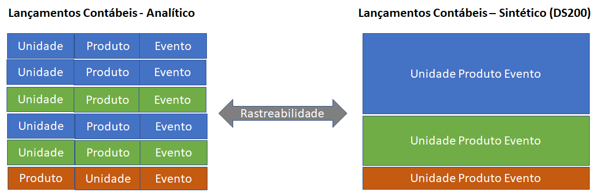
- Agrupamento de fatos operacionais correlacionados: Algumas transações negociais precisam ser decompostas em vários fatos operacionais para atenderem aos critérios de escrituração contábil. Exemplo: recebimento de parcela de financiamento, decomposta nos seguintes fatos operacionais: fato_amortização, fato_juros e fato_seguro. O relacionamento ilustrado na modelagem abaixo deve garantir a rastreabilidade dos fatos operacionais que compõe uma transação dentro do escopo negocial.
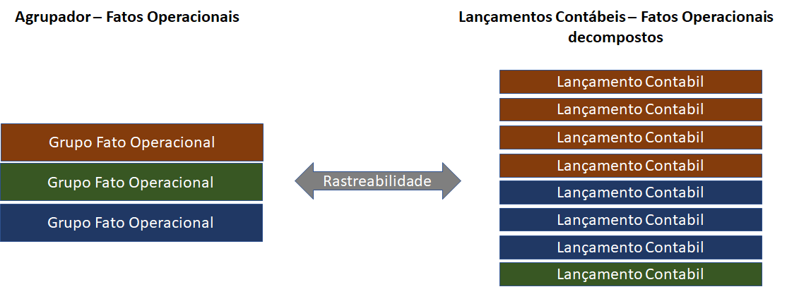
-
Suporte ao controle de inconsistências operacionais: Suportar o controle de fatos operacionais ativos no sistema operacional sem o respectivo vínculo contábil. Suportar também o controle da conciliação de fechamento. O controle dos fatos operacionais ativos sem vínculo contábil consiste em manter esses fatos operacionais em uma base específica de pendências críticas. Essa base deve contar com mecanismos de notificação e evidência que permitam a identificação e o tratamento tempestivo desses fatos, evitando impactos na integridade dos dados contábeis e operacionais. O controle de fechamento consiste em garantir que na ocorrência de um fato operacional com vínculo de lançamento a um segundo fato operacional em outro sistema, o envio para o SINAF seja realizado de forma conciliada, ou seja: o primeiro fato operacional só é enviado para o módulo de escrituração pelo primeiro sistema após a confirmação do recebimento e validação de tratabilidade do fato operacional repassado ao segundo sistema. O resultado desta validação, a ser realizada pelo segundo sistema, deve ser retornada ao primeiro sistema via arquivo de retorno - quando a interface for batch - ou na resposta da chamada de serviço - quando a interface for on-line. Cabe aqui salientar que a implementação destes controles deve ser feita nos sistemas operacionais, e deve sempre considerar somente sistemas operacionais integrados diretamente, conforme detalhamento feito mais adiante neste documento*
-
Envio dos lançamentos contábeis ao SINAF: Os lançamentos deverão ser enviados a partir do módulo de escrituração para o SINAF, em arquivo codificado no padrão DS200 e com registros consolidados por evento, unidade ou produto;
-
Geração de Razonete e outros relatórios operacionais contemplando o escopo do sistema operacional: Consiste na possibilidade de se gerar razonetes para controle do saldo das subcontas e outros aspectos no âmbito do sistema operacional e em sincronia com o plano de contas cadastrado no SINAF.
O modelo de dados fisico representado abaixo, extraído do projeto Plataforma de Crédito, implementa os requisitos de armazenamento apresentados (sumarização de eventos contábeis e agrupamento de fatos operacionais correlacionados) bem como os demais descritos acima.
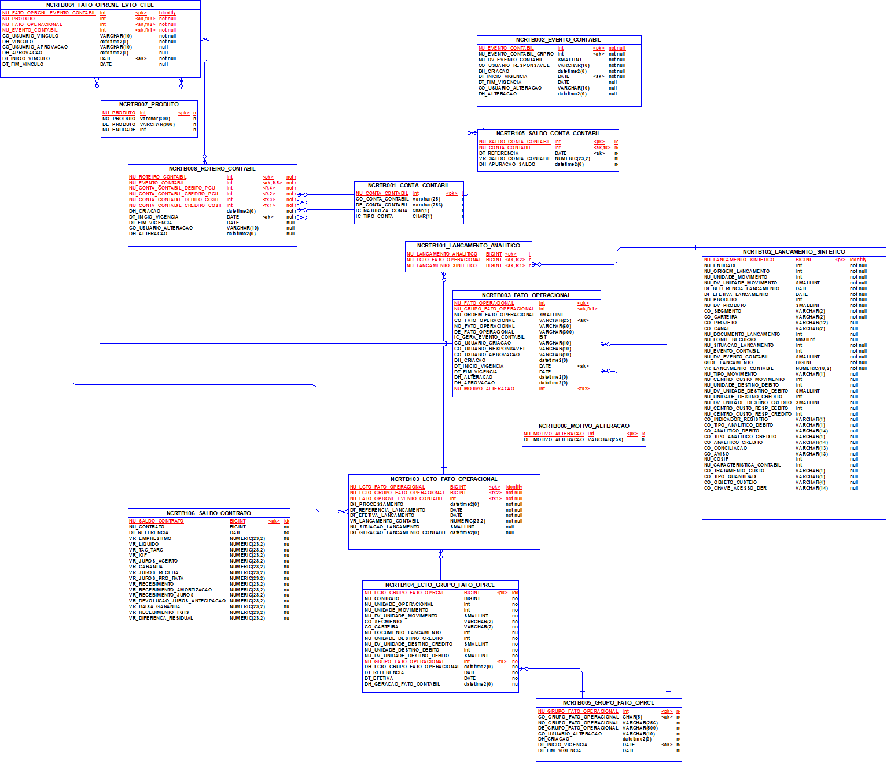
Segue abaixo a representação conceitual da arquitetura de solução proposta.
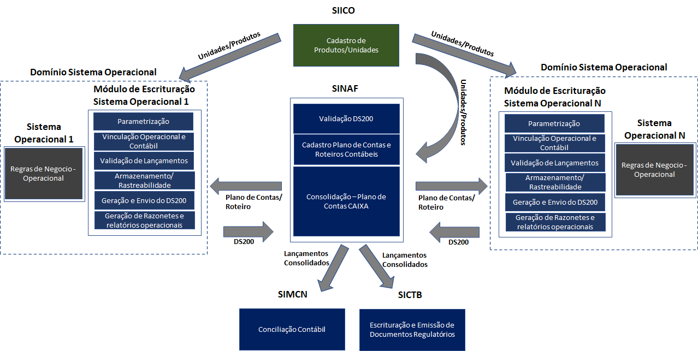
A seguir temos uma descrição das telas de parametrizações e demais funcionalidades a serem implementadas pelo módulo de escrituração nativa:
A parametrização operacional e contábil se inicia com o gestor operacional inserido os dados relacionados aos fatos operacionais específicos do negócio a serem gerenciados pelo sistema operacional, conforme descrito abaixo:
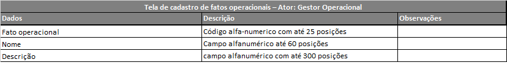
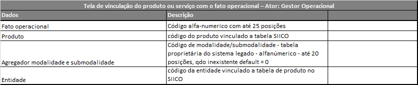
Cabe aqui que salientar que o módulo de escrituração de deve possibilitar o tratamento concomitante de um mesmo fato operacional com desdobramentos distintos (aderentes a planos de contas específicos) conforme a entidade selecionada.
Trata-se do suporte ao conceito "multi-empresa", contexto comum na CAIXA, haja vista sua atuação no mercado na operação tanto de produtos próprios quanto de terceiros.
O atendimento de tal requisito requer nesta fase do cadastramento, a seleção de uma entidade especifica a ser vinculada ao fato operacional em questão.
A segregação de entidades abre rotas diversas, sendo que cada uma delas estará vinculada a um fato operacional, que embora seja o mesmo, estará submetidos à planos de contas distintos, a depender da entidade selecionada.
Os eventos, roteiro contabeis e produtos vinculados a tais fatos correlacionados a entidades NÃO-CAIXA também devem estar sincronizados com o SINAF e o SIICO, a exemplo dos eventos vinculados a entidades CAIXA.
Na sequência o gestor contábil acessa o módulo de escrituração para registrar a vinculação dos fatos operacionais cadastrados aos seus respectivos eventos contábeis:
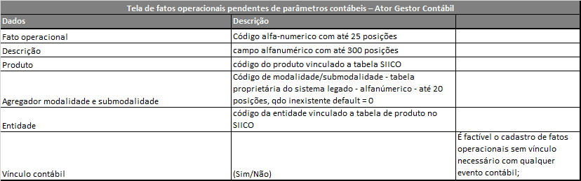
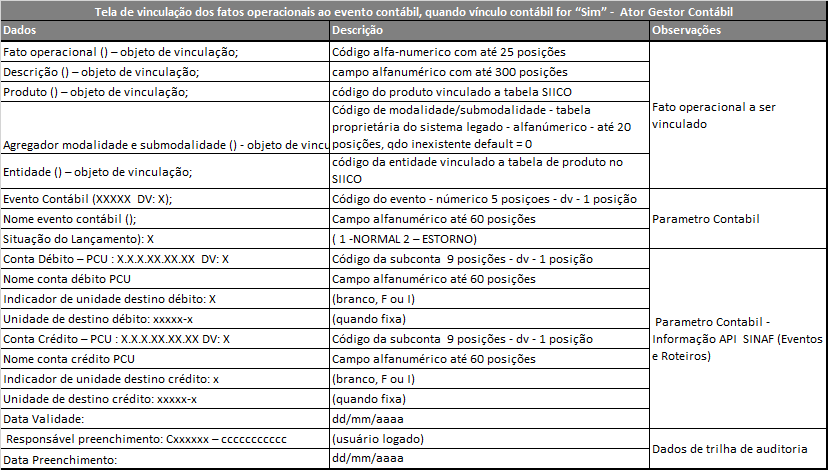
Por fim, o gestor contábil com perfil específico, faz a validação dos dados parametrizados. Somente a partir deste momento os dados estão disponíveis para uso pelo módulo de escrituração:
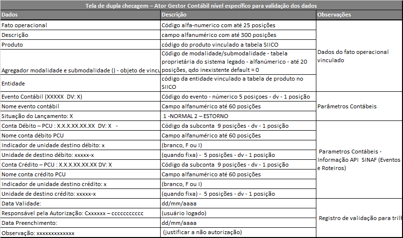
O módulo deve também armazenar trilha de auditoria de todas as ações de parametrizações realizadas, conforme a seguinte descrição:
- Histórico Vinculação (alterações ocorridas nos fatos operacionais ou nos roteiros contábeis)
- Data criação fato operacional
- Descrição inicial do fato
- Matrícula do responsável
- Matrícula do aprovador
- Evento contábil vinculado
- Data da vinculação contábil
- Matrícula do responsável
- Matrícula do aprovador
- Alterações/exclusões subsequentes
- Data da alteração/exclusão
- O que foi alterado, se for o caso
- Motivo da exclusão/alteração
- Matrícula do responsável
- Matrícula do aprovador
- Alteração/exclusão do fato operacional
- Data da alteração/exclusão
- O que foi alterado, se for o caso
- Motivo da exclusão/alteração
- Matrícula do responsável
- Matrícula do aprovador
- Alteração do roteiro contábil
- Data da alteração/exclusão
- Matrícula do responsável
- Matrícula do aprovador
- O que foi alterado, se for o caso
- Motivo da exclusão/alteração
Seguem abaixo os dados mínimos requeridos para interpretação e escrituração do lançamento contábil e que devem obrigatoriamente estar armazenados de forma integra e consistente na base de dados do módulo de escrituração:
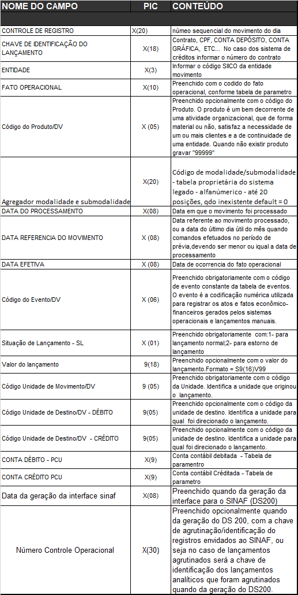
O modulo de escrituração deve ainda prover a geração dos seguintes relatórios operacionais:
- Razonetes;
- Balancetes;
- Demonstrativo de Eventos Gerados;
- Demonstrativo de fatos operacionais com e sem registro contábil;
- Demonstrativo de conciliação;
- Lançamentos pendentes de ajustes no Operacional – DER do SINAF;
Os layouts de cada relatório acima descritos estão no ANEXO III.
A inibição da existência de fatos operacionais ativos no sistema operacional sem o respectivo vínculo contábil deve ser implementada pelo sistema operacional, com base nas informações cadastradas no módulo de escrituração nativa.
A garantia do envio conciliado de eventos que possuem fatos operacionais correlacionados, cujos lançamentos são feitos por sistemas operacionais distintos deve ser garantido no nível operacional pelo sistema responsável. O fato operacional de origem deve ser retido até que seja retornado pelo outro sistema operacional a confirmação de recebimento e tratabilidade do fato operacional decorrente transmitido. A partir deste momento, a dependência operacional existente entre os dois sistemas é considerada sanada e os eventos contábeis vinculados podem finalmente ser enviados ao módulo de escrituração. Sendo assim, não é necessário que o primeiro sistema operacional envolvido na integração retenha o lançamento do seu evento contábil ao seu módulo de escrituração até que o outro sistema conclua a integralidade suas rotinas operacionais para liberação do seu respectivo evento contábil. Basta que ele sinalize a recepção e a pertinência de tratamento do evento repassado
Como benefícios esperados da incorporação do módulo de escrituração nativa ao sistema operacional podemos citar:
- Maior integridade dos eventos contábeis enviados ao SINAF;
- Plano de contas (SINAF) único e integrado com os sistemas operacionais;
- Melhoria significativa da rastreabilidade dos eventos contábeis registrados e publicados nos relatórios sintéticos, facilitando desta forma o trabalho de avaliação do balancete e acompanhamento das auditorias internas e externas;
- Drástica redução da geração de pendencias contábeis;
- Eliminação do retrabalho de conciliação contábil, que passa a ser na origem.
Segue abaixo a especificação da arquitetura de solução proposta:
De forma a atender todos as variadas plataformas e tecnologias utilizadas na CAIXA (Cobol, Java, Mumps/Cache, Oracle, DB2, IDMS, etc..) recomenda-se o uso uma arquitetura de integração de baixo acoplamento entre o sistema operacional e o módulo de escrituração a ser construído, por meio de mensageria assíncrona, com o uso da ferramenta IBM MQ
A comunicação do sistema operacional e o módulo de escrituração deverá implementar as seguintes interfaces:
- Envio do fato operacional gerado no sistema operacional para o módulo de escrituração:
- Publicação da tabela de fatos operacionais com vínculo contábil pelo módulo de escrituração para consumo do sistema operacional. A partir destas informações o sistema operacional poderá inibir o uso de fatos sem vinculação contábil em suas operações.
Neste contexto o módulo de escrituração Nativa deverá implementar as seguintes funcionalidades:
- Sincronização de sua base de dados com SINAF/SIICO (roteiros contabeis, planos de contas, dados de produtos e sistemas) por meio de cargas diárias oriundas destes sistemas. Tais cargas serão realizadas ao final de cada movimento, de forma a contemplar qualquer alteração realizada nestes sistemas no decorrer do dia.
- Parametrização operacional e contábil;
- Base de pendências de fatos operacionais ativos no sistema operacional sem o respectivo vínculo contábil e relatórios para vizualização destas pendencias. O layout deste relatório esta disponivel no ANEXO III;
- Vinculação de fatos operacionais e análise de erros/inconsistências nos lançamentos contabeis a serem enviados ao SINAF. As regras de verificação de erros e inconsistências a serem implementadas pelo módulo de escrituração estão no ANEXO I ;
- Balanceamento de subcontas utilizadas em lançamentos contábeis específicos. As regras de balanceamento estão no ANEXO II;
- Armazenamento dos eventos contábeis na granularidade analítica e com suporte a rastreabilidade (sumarização de lançamentos e composição de transação operacional);
- Geração de razonetes e outros relatórios operacionais contemplando o escopo do sistema operacional. Os leiautes destes relatórios estão no ANEXO III;
- Envio de lançamentos sumarizados ao SINAF (DS200);
O sistema operacional por sua vez deverá sofrer ajustes para contemplar a comunicação com as filas do IBM MQ – visando a integração com o módulo de escrituração e a implementação das seguintes funcionalidades:
- Inibir a geração de fatos operacionais com erros ou inconsistências. O mapeamento de tais ocorrências pode ser verificado no ANEXO I;
- Envio do fato operacional validado para o módulo de escrituração. Os campos que compoem o registro do fato operacional a ser enviado ao módulo de escrituração pode ser verificado no ANEXO V;
- Garantia de recepção e tratabilidade de eventos repassados de forma direta a um outro sistema operacional. O evento somente é enviado ao módulo de escrituração após tais confirmações, a serem feitas mediante processamento de arquivo de retorno ou da resposta de chamada a serviços de forma on-line. Os sistemas operacionais que atualmente não fazem tal tratamento deverão implementa-lo.
Segue abaixo, o diagrama de contexto da arquitetura de solução proposta para este cenário:
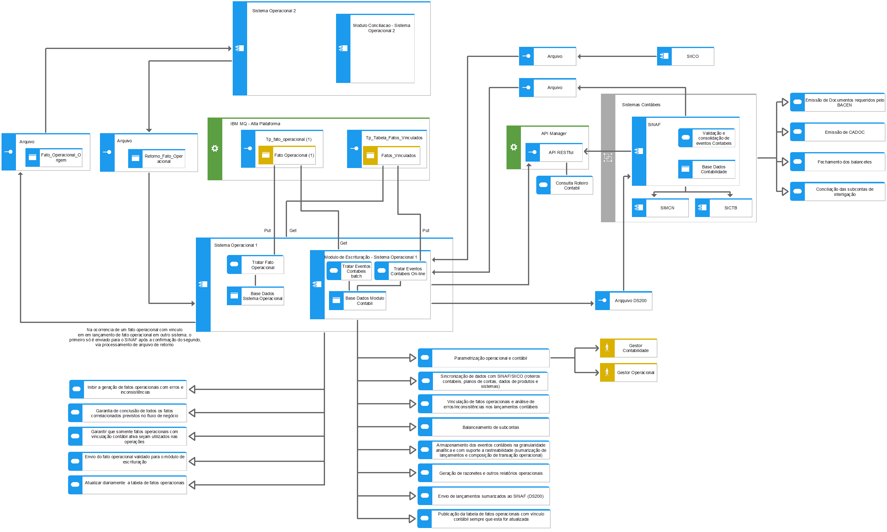
Considerações Finais
A implementação da arquitetura proposta irá demandar atuação conjunta e colaboração entre as equipes dos sistemas operacionais envolvidos – gestão/desenvolvimento - e as áreas responsáveis pelos processos e sistemas contábeis da CAIXA (GECOR/GEINC).
Segue, por fim as premissas assumidas para a elaboração da arquitetura proposta:
- SINAF permanece sendo a interface de entrada na contabilidade para os eventos contábeis gerados nos sistemas operacionais;
- Fatos operacionais e o vínculo com os seus respectivos eventos contábeis devem ser parametrizáveis;
- Plano de contas deve se manter único e integrado;
- Solução deve ter o máximo de padronização e o mínimo de impacto nos sistemas operacionais legados;
ANEXOS
ANEXO I - Regras para validação de erros/inconsistencias
- Regras de Validação para sistemas operacionais
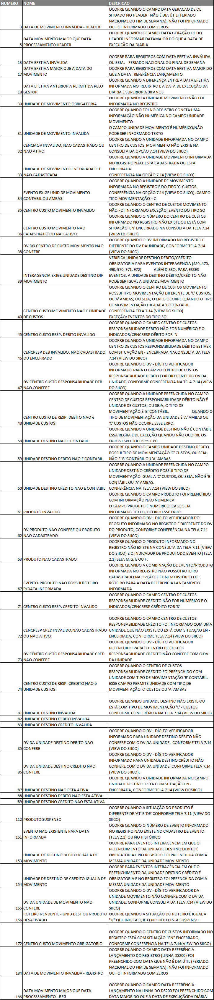
- Regras de Validação para o modulo de escrituração
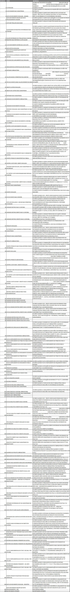
ANEXO II - Regras para balanceamento de subcontas
-
Substituição da subconta CAIXA pela subconta de balanceamento 185351001 O SINAF utiliza essa subconta para substituir a subconta Caixa que compõe roteiros contábeis utilizados em lançamentos oriundos de alguns sistemas específicos – OLs específicos. As únicas OLs que o SINAF não substitui a subconta caixa pela 185351001 são: 0003, 1102, 0001/350 e 0001/450, que correspondem lançamentos que realmente fazem sentido manter escriturada a subconta caixa. Todos os demais deverão ser substituídos. O objetivo dessa regra é não ter registros na conta caixa, exceto quando há movimentação financeira. Detalhamento da regra: Roteiro – Se aplica para eventos que possuem a subconta CAIXA (111101001) no roteiro. Exemplo: Quando o cliente foi na agência e sacou dinheiro no CAIXA. Envolveu movimentação na subconta CAIXA. Evento 101. Regra: Todas as OL serão substituídas de forma automática. Exceção: As OL 0003, 1102, 0001/350 e 0001/450.
-
Movimentação entre unidades: Subconta 185351003 O SINAF utiliza essa subconta para registrar o direcionamento de lançamento entre unidades diferentes. Ou seja, quando a unidade destino débito e/ou unidade destino crédito são diferentes da unidade de movimento.
Detalhamento da regra Roteiro: Olhamos o indicador de unidade de destino das subcontas debitadas e creditadas. N – Não permite direcionamento. I – Permite direcionamento. F – Obriga direcionar para unidade fixada. (quando for utilizado, a GEINC tem que preencher uma unidade fixa) Quando a unidade destino débito ou unidade destino crédito for preenchida no lançamento e for diferente da unidade que consta no campo unidade movimento, a aplicação avalia o indicador que está no roteiro. Se for N, então ele desconsidera o que foi preenchido. Se for I, então ele gera lançamento adicional com a subconta 185351003 adicionando sequencial. Se for F, então ele considera apenas a unidade que está fixada no roteiro. Se ela for diferente da unidade de movimento, a aplicação deve gerar lançamento adicional com a subconta 185351003 adicionando sequencial.
ANEXO III - Leiaute de razonetes e relatórios operacionais
- Fatos Operacionais -econônico-financeiro- Gerados sem Parametrização Contábil
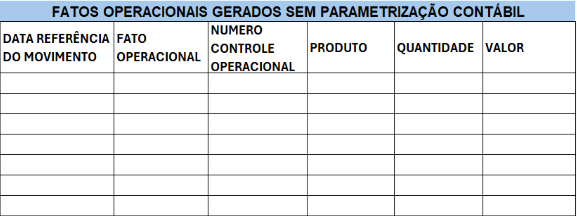
- Razonetes
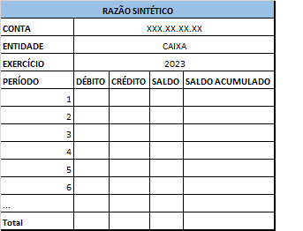
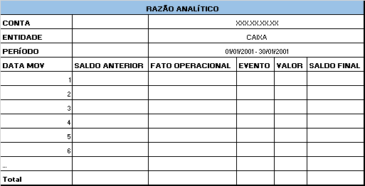
- Balancetes
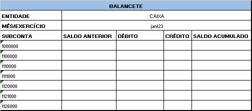
- Demonstrativo de Eventos Gerados
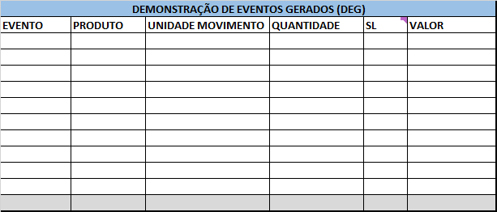
O sistema deve apresentar filtros e totalizadores de todos os campos, além da possibilidade de extração da informação via .CSV.
- Demonstrataivo de Fatos Operacionais Com e Sem Registro
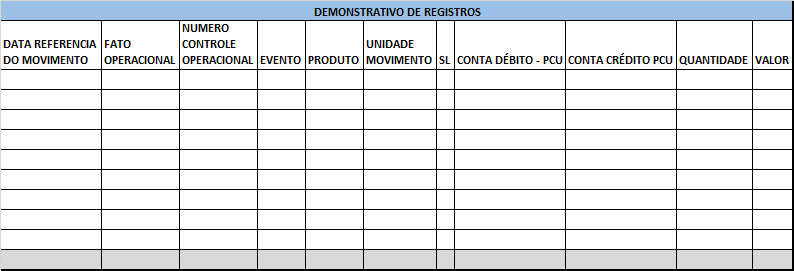
O sistema deve apresentar filtros e totalizadores de todos os campos, além da possibilidade de extração da informação via .CSV.
- Demonstrativo de Conciliação
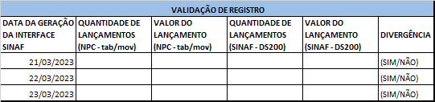
- Lançamentos Pendentes de Ajustes no Operacinal
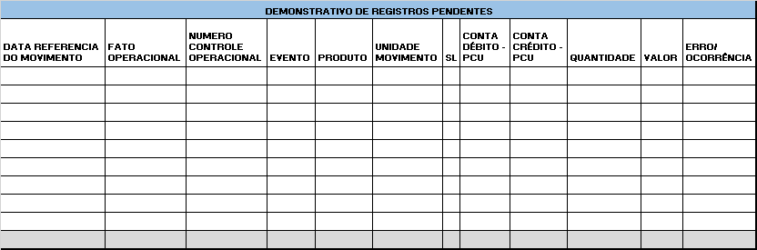
Os registros com erro/ocorrências não devem ser registrados e enviados ao SINAF. Esses erros devem ser corrigidos no sistema operacional e reencaminhados para o módulo de escrituração para reprocessamento.
ANEXO IV - Leiaute DS200
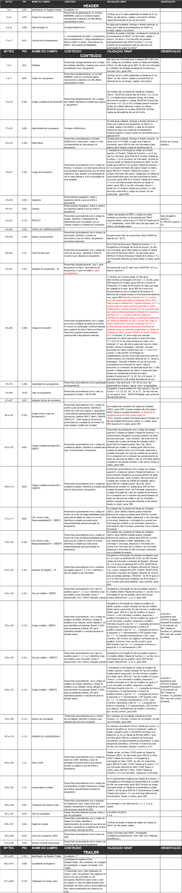
ANEXO V - Leiaute registro fato operacional enviado ao módulo de escrituração
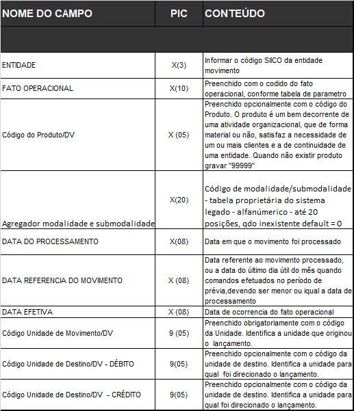